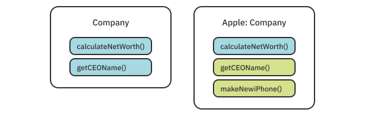

Chapter 3: Protocols¶
If you’ve used Swift before, you’ve probably used protocols. A lot. Protocols and protocol-oriented programming are built into the DNA of Swift, and it’s hard to imagine what Swift would look like without all the power its protocols hold. Because they’re an integral part of Swift, this whole chapter focuses on explaining how protocols work and how you can leverage them in your code to produce clean, long-lasting and easy-to-refactor APIs.
As a Swift developer, you probably already know the basics of protocols. Still, it’s a good idea to go through a brief refresher on the basics of protocols as well as some of their more rarely used features. Once you remind yourself of everything protocols can do, you’ll look at how they work behind the scenes. You’ll also learn about common patterns that use protocols as well as some useful gotchas and edge cases to keep in mind.
You’ll do this by building a tiny RESTful networking library, which you’ll then use to make an app that displays raywenderlich.com articles. Before you get your hands dirty, you’ll first go through a brief refresher on Swift’s protocols.
Getting started with protocols¶
To understand why protocols are important, step back and see how statically typed languages work. Look at the following line of code:
counter.increment(by: 10)
Say that counter is an object of a class called Counter, and you’re calling an instance method called increment(by:). This instance method may or may not exist in the class — maybe you forgot to write it. In a more dynamic language such as Objective-C, the compiler will happily run the code and nothing will happen. Some dynamic languages, such as JavaScript, will run the code but show an error saying that increment does not exist. Swift, being a statically typed language, will first check whether increment(by:) exists in that class, and if it doesn’t, won’t even run your code. Although sometimes it seems like the compiler is complaining, really it’s saving you from making stupid mistakes.
The compiler knows whether the method exists because it knows the type of counter is Counter, and it can then query the Counter class for a matching increment method. But there are cases where neither the compiler nor you is exactly sure which type you’d like to use. What if you want to define a single function that can increment different kinds of counters — not just your own Counter but also a DoubleCounter, UserCounter, etc.?
Consider the following method:
func incrementCounters(counters: [?]) {
for counter in counters {
counter.increment(by: 1)
}
}
What should be the type of counters? It doesn’t make sense to limit it to just [Counter], because you want other types to work as well. You could try using [Any] but you’d get an error — Swift can’t know if an instance of Any will have the increment(by:) method. What you need is a way to tell the compiler “I want any type that has an increment(by:) method.” That’s where protocols come in.
A protocol could look as follows:
protocol Incrementable {
func increment(by: Int)
}
By defining a protocol with a method requirement, you can use the protocol as a type, saying “This method receives anything that implements Incrementable.”
func incrementCounters(counters: [Incrementable]) {
for counter in counters {
counter.increment(by: 1)
}
}
When you write a concrete implementation of the protocol, Swift will verify that you declared the increment(by:) method. Knowing this, the Swift compiler can guarantee that your function will work for all instances of Incrementable.
Hiding information¶
Protocols are a tool of the type system that allows you to use multiple types as the same super-type by hiding information about a type. For instance, you know that for a square with sides a and b, a == b is true. You also know that a square is a rectangle. By loosening the requirement that a == b, you can treat a square as a rectangle and define a single way to calculate the area. That way, you won’t need to write two implementations.
In the same way, protocols hide all other members of a class or struct, except the ones exposed by the protocol. This allows you to use multiple types in the same place.
Another way to look at protocols is as interfaces (in fact, many languages call them that). Kitchen appliances, computers and phone chargers are quite different, but they all turn the same interface toward the wall socket: a plug. All a socket knows is that the device is something that needs power and has a plug. In the same way, if you were modeling different devices in Swift, you could make a Pluggable protocol that exposes a plug(into:) method, allowing the Socket to work with all possible devices.
Encoding semantics¶
So far you read about how a type can conform to a protocol if it implements the required methods and protocols. In Swift, there is another important aspect to protocols: semantics. In programming, there are things that you can’t encode in the function signature. For instance, you might want to sort some arrays. To allow for different sorting algorithms, you implement a Sorter protocol with methods to sort an array.
However, you are working on an app with lots of data, and your algorithms need to be very fast, so you might want to limit Sorter implementations to those with Big O notation of O(n) or faster. Maybe you also require that the sorting algorithm is stable. A stable algorithm keeps repeated elements in the same order after sorting. These are all examples of things you can’t let the compiler check for you. Instead, you have to add these requirements in type names and documentation, so you change your protocol name to StableEfficientSorter.
If protocols were only method requirements, it would make it hard to write truly generic functions since implementation details could completely change the way your code works. Protocols are also used to describe semantic requirements. This is exactly the reason why Swift doesn’t conform types to protocols automatically. When writing code, you must consider which semantic requirements are important for your protocols and clearly document them.
Protocol syntax¶
Now that you understand the semantics of protocols, it’s time for a brief refresher on protocol syntax.
Note: For this section of the chapter, you don’t need to type along. But should you wish to do so, start by creating a new empty playground that imports UIKit and SwiftUI. Alternatively, you can find the code used for this section under final/Protocols.playground.
Here’s a simple enum and a protocol:
enum Language {
case english, german, croatian
}
protocol Localizable {
static var supportedLanguages: [Language] { get }
}
The protocol has one required member, supportedLanguages. In this case, this is a variable (not a function) that needs to have a getter. A setter is not required by the protocol, which means computed variables or variables declared with the private(set) access modifier will also satisfy the requirement. It is also marked as static, which means that the conforming variable needs to be static as well.
Next, take a look at another protocol.
protocol ImmutableLocalizable: Localizable {
func changed(to language: Language) -> Self
}
This protocol inherits from the one mentioned earlier. Inheritance in protocols works similarly to classes: All the protocol’s requirements are passed onto its child protocols. This means the ImmutableLocalizable protocol has two required members: supportedLanguages and changed(to:). Unlike supportedLanguages, changed(to:) is a function and must be declared as returning Self, the current type. For instance, if you declare this function inside a class called FeedView, Self will have the value of FeedView.
Next, look at another protocol that inherits from Localizable:
protocol MutableLocalizable: Localizable {
mutating func change(to language: Language)
}
This protocol is very similar to the last one, but you’ll notice a new keyword: mutating. You’re probably familiar with this keyword because you have to use it in a struct’s method when the method’s body changes a property of that struct. In protocols, it means the same thing. Structs need to implement this method by making it mutating, but classes don’t. Classes are already mutable by default, so there’s no need for an additional keyword.
Implementing protocols¶
Now that you’ve declared three protocols, it’s time to implement them in a few of your types. If you’re used to other programming languages, you might be surprised to hear that, in Swift, every type can implement a protocol. This includes structs, classes and even enums!
Start by declaring a struct called Text, which will implement one of your protocols:
struct Text: ImmutableLocalizable {
static let supportedLanguages: [Language] = [.english, .croatian]
var content = "Help"
func changed(to language: Language) -> Self {
let newContent: String
switch language {
case .english: newContent = "Help"
case .german: newContent = "Hilfe"
case .croatian: newContent = "Pomoć"
}
return Text(content: newContent)
}
}
The Text struct implements the ImmutableLocalizable protocol. This means it needs to implement all members of both the ImmutableLocalizable and Localizable properties because one inherits from the other.
You also can conform types to protocols using extensions:
extension UILabel: MutableLocalizable {
static let supportedLanguages: [Language] = [.english, .german]
func change(to language: Language) {
switch language {
case .english: text = "Help"
case .german: text = "Hilfe"
case .croatian: text = "Pomoć"
}
}
}
You’ll see extensions used to conform a type to a protocol more often than not. Doing so allows you to conform types outside your control, like the ones in SwiftUI or UIKit, to your protocols. It also provides a nice way to structure your files so everything protocol-related is within an extension, giving you an easier overview of the file.
Extending protocols¶
Not all members of a protocol need to be required. You can provide a default implementation of a protocol’s member by extending the protocol itself:
extension Localizable {
static var supportedLanguages: [Language] {
return [.english]
}
}
Note: There are a few caveats to consider with extending protocols like this. Later in this chapter, you’ll learn exactly how this extension works and a few edge cases to be wary of.
Here, you extend Localizable with a default implementation of supportedLanguages. Each type conforming to Localizable now has access to that implementation, so they don’t have to define their own.
struct Image: Localizable {
// no need to add `supportedLanguages` here
}
So far, you have worked with protocols that any type in your code can implement. You can limit your protocols to be conformed to only by classes. You do this by inheriting the AnyObject protocol — a protocol that each class implicitly conforms to.
protocol UIKitLocalizable: AnyObject, Localizable {
func change(to language: Language)
}
Note that, although this protocol has the same requirements as MutableLocalizable, the mutating keyword got lost. Because this protocol can be implemented only by classes, there’s no reason to specify that something is mutating: In classes, everything is already mutable by default.
Speaking of limiting the conformance to a protocol, you can also limit a protocol to only subclasses of a specific class.
protocol LocalizableViewController where Self: UIViewController {
func showLocalizedAlert(text: String)
}
Here, your protocol can be used by only UIViewController or subclasses thereof.
Protocols are abstract. But that doesn’t mean you can’t get as specific as required to limit conformance to exactly the types you need.
Now that you have a bunch of types and protocols, you can use them in their full glory. For instance, you can define a single function that works with all MutableLocalizable types.
func localize(
_ localizables: inout [MutableLocalizable],
to language: Language
) {
for var localizable in localizables {
localizable.change(to: language)
}
}
Note that you use an array of MutableLocalizable, which can be filled with any combination of types as long as they all implement MutableLocalizable.
Protocols have immense power. But it’s hard to see just how useful they are until you work on a large codebase and for a long time. Everything protocols offer can be approximated in other ways, using inheritance, generics, function overloading or copying and pasting code. What all those ways lack is clear intentions and semantics, as well as protocol-guaranteed safety and ease of refactoring.
Now that you have the basics down, it’s time to get into some nitty-gritty protocol details.
Behind the scenes of protocols¶
Knowing the surface-level of protocols is enough to go out in the world and use them. But to truly wrap your head around the edge cases and performance considerations of protocols, you need to look deeper into Swift’s inner workings.
Static and dynamic dispatch¶
More specifically, you need to understand what happens when a function is called. Functions seem like compiler magic: You declare them in one place and that code is then somehow executed from another place. However, it’s a lot less magical than you might think. What happens is that, at runtime, when Swift finds a function name, it jumps to the address of that function and starts executing the code. But jumping to a function’s address is not always straightforward.
There are two main mechanisms for storing and calling functions: static and dynamic dispatch. Static dispatch is fairly straightforward: It happens when you know for sure that a function will never change. Static dispatch is used, among other reasons, for global functions and methods declared in structs as well as methods on final classes. In those cases, there is no function overriding to worry about, so the compiler can, in a sense, hard-code the function’s address and hop to that whenever the function is referenced.
Note: Aside from method dispatch, there is also a technique called inlining that Swift uses extensively. Inlining replaces a function call with the full body of that function at compile time. This is the fastest way to call a function, but it’s only available with static dispatch and under specific conditions.
When you add pesky inheritance and protocols, things get a bit more complicated. A method called on a non-final class instance can be declared in multiple possible places. It can be declared inside the class, any of its parent classes, an extension or even a protocol extension. This means the compiler can’t know ahead of time what the exact address of a function will be. Instead, it uses something called the witness table (sometimes also called the v-table or the virtual table).

As the compiler goes through your code, it will create a table for each class. This table will have two columns: one for an offset in the table and one for the function at that offset. Each function in the class is stored in the table, which is stored in your working memory. A subclass will get a copy of its parent’s table and then replace the rows of the method it wants to override. Now that a witness table is built, Swift can use the table at runtime. When it encounters a method call, Swift knows which offset in the table corresponds to that method.
This allows dynamic changing of the implementation of a method with the same name, allowing features like inheritance, polymorphism and even protocols. But these features come at a cost. Calling functions from table rows adds a constant overhead for each function call. It also prevents inlining and other compiler optimizations, making dynamic dispatch slower than static dispatch.
Dispatch in protocols¶
The whole dispatch story is interesting, but you’re probably wondering how this all relates to protocols. I mentioned that inheritance complicates the compiler’s life by requiring dynamic dispatch. Well, protocols support inheritance, too. Aside from that, multiple classes and structs can conform to the same protocol and implement the same method. And then they can be used the same way, like in the examples earlier in this chapter. If you’re using a protocol as the type of your instance, Swift can’t know ahead of time if the Localizable instance will be UILabel or Text. So it needs to dispatch methods dynamically.
Dispatching protocol methods is similar to how classes work. Every type that implements a protocol gets its own protocol witness table. The table has two columns again, one with the function and the other with the offset of that function. Each member of the protocol (the methods and variables declared as the protocol requirements) has its own row in the table. This table is then stored together with each instance that implements a protocol. Swift can then, at runtime, look up the correct function in the protocol witness table and call it. If you’re using a class instance, Swift can look the function up in both the class and the protocol witness table, dynamically finding the correct implementation.
Dealing with extensions¶
So far, so good. But there’s one feature that can make your head spin when thinking about dispatch: extensions. When you define an extension on a protocol to implement a default method, is that extension stored in the protocol’s table or an implementing instance’s table? What if you add a protocol extension for a method that is not part of the protocol requirements? Understanding static and dynamic dispatch will help you answer these questions.
First, you’ll deal with extending protocols to provide default method implementations. Set up a protocol so it has an extension that provides the default implementation for one of its methods:
protocol Greetable {
func greet() -> String
}
extension Greetable {
func greet() -> String {
return "Hello"
}
}
Next, create a struct implementing the protocol:
struct GermanGreeter: Greetable {
}
Then, make an instance of your new struct and call its protocol method:
let greeter = GermanGreeter()
print(greeter.greet())
As expected, because GermanGreeter doesn’t implement its own greet method, the line above prints out “Hello”. The way this works is that the default greet implementation is copied to every type that conforms to the protocol and added to their protocol witness table. Note that the protocol itself doesn’t have a table. Only concrete types do.
Your greeting is obviously wrong. Translate it to German by implementing the method inside GermanGreeter:
func greet() -> String {
return "Hallo"
}
One letter is all it takes to make it German. If you run the code again, it’ll print “Hallo”. This happens because your new implementation replaced the extension method in the protocol witness table. The same thing happens when you override a method in a class.
So far, everything works as expected, right? Now, try to create something unexpected. Add a new method in the protocol extension:
func leave() -> String {
return "Bye"
}
This function lives inside the protocol extension, but it’s not declared as a requirement of the protocol. However, every type implementing the protocol still has access to the method. Verify this by calling the new method:
print(greeter.leave())
As expected, this outputs “Goodbye”. Translate this again by adding a new method in GermanGreeter:
func leave() -> String {
return "Tschüss"
}
If you run the code again, it works just like before: The new method gets called and the output is “Tschüss”. However, if you change the declaration of greeter to use the protocol:
let greeter: Greetable = GermanGreeter()
greet still outputs “Hallo”, but leave is now in English and outputs Goodbye!?
Swift seems to entirely bypass the function you declared in the struct and calls the function from the protocol extension. Although this is unexpected, there’s a clear reason why it happens. Your first hint is that the called function depends on the variable’s declared type. This means polymorphism doesn’t work. Earlier, I mentioned that dynamic dispatch enables polymorphism, so leave must be called using static dispatch.
Indeed, extension methods rely entirely on static dispatch. There is no table involved in calling leave — Swift calls it statically on the variable’s type. greet works as expected because by adding it to the protocol’s requirements, you forced Swift to create a protocol witness table entry for the method, enabling dynamic dispatch.
This is important because adding extension methods to protocols is quite common in Swift. It’s a great way to add additional reusable functionality to your structs and classes. But always keep in mind that if you ever want to override the extension method, you need to add it as a protocol requirement. Otherwise, you might end up with very unexpected results.
Protocols and the type system¶
Protocols really shine when you have a good type system supporting them, and Swift is definitely an example of that. In this section, you’ll get into what protocol types are and how to use them most effectively to your advantage.
Existentials¶
Earlier, you defined a variable as a protocol:
let greeter: Greetable = GermanGreeter()
This code probably isn’t very surprising: You define variables all the time. However, there is a big difference between using Greetable here and using a concrete type like Int. Greetable, though it might look and act as a regular type, is called an existential type. Although the name sounds fancy, it’s not that complex of a concept: You can think of existential types as placeholders for a real, concrete type. The compiler can interpret them as saying “There exists some type that conforms to this protocol.” Existential types allow you to use protocols as types of method parameters, array elements, variables and other data structures without thinking about it.
Using protocols as types¶
You’ve already seen a few examples of using protocols as types, such as:
func greet(with greeter: Greeter) -> Void
let englishGreeter: Greeter = EnglishGreeter()
let allGreeters: [Greeter] = [englishGreeter]
There also are many less-known but useful ways you can use protocols. For instance, you can compose multiple types into a single type using the & operator:
func localizedGreet(with greeter: Greeter & Localizable)
The greeter parameter from above must be a type that conforms to both Greeter and Localizable. You can compose a struct type with protocols (Date & Codable), a class type with protocols (UITableViewCell & Selectable) or multiple protocols like above. You can also string together as many protocols as you want in the composition. It’s not limited to only two members.
However, you can only use these composed types, also called non-nominal types, as the type of a variable. You can’t, for instance, define an extension on Greeter & Localizable. You can do that in other ways, though.
For instance, you can define an extension of all subclasses of a class that also conform to a protocol:
extension UITableViewDelegate where Self: UIViewController {
func showAlertForSelectedCell(at index: IndexPath) {
// ...
}
}
Here, all UIViewControllers that conform to UITableViewDelegate automatically get an implementation of showAlertForSelectedCell.
You can also drill down to extend generic types where their generic parameter conforms to a protocol:
extension Array where Element: Greetable {
var allGreetings: String {
self.map { $0.greet() }.joined()
}
}
You can take that a step further and add conformance to a protocol for a generic type whose generic parameter conforms to a protocol:
extension Array: Localizable where Element: Localizable {
static var supportedLanguages: [Language] {
Element.supportedLanguages
}
}
The extension above makes all arrays Localizable as long as their Element type is also Localizable. This is exactly the way Swift makes an array of Codable items also conform to Codable, an array of Equatable items conform to Equatable, etc.
You’ll discover more about these sorts of extensions in the next chapter, when you learn about generics in Swift.
Synthesized protocol conformance¶
If you’ve used Swift for a while, maybe you’ve noticed that there are some protocols like Codable that magically work as soon as you conform to them. This happens when Swift generates a synthesized protocol implementation for you. Swift does this for Equatable, Hashable, Comparable and the two Codable protocols: Encodable and Decodable.
There are limitations to this for each protocol. Usually, Swift can generate conformance to a protocol only if all your properties also conform to that protocol. In the case of Hashable, for instance, all your properties need to be hashable for Swift to synthesize the required methods.
struct User: Hashable {
let name: String
let email: String
let id: UUID
}
If you add a property that isn’t itself Hashable, Swift will complain and you’ll need to add your implementation.
Protocol-oriented programming¶
Enough theory! It’s time to get your hands dirty and work with protocols to build an easy to use networking library similar to Alamofire. In this part of the chapter, you’ll use protocols to make an API nice and clean. In the next chapter, you’ll keep working on your library but introduce generics to make it even easier to use.
Start by opening the starter project provided in this chapter’s materials. If you build and run the project, you’ll see a list of one hard-coded article. You’ll change this app so it downloads articles from the raywenderlich.com API, building your own little learning platform! The app already contains the necessary UI in the Views group. It also includes an ArticlesViewModel.swift file, which you’ll modify to load actual data from the API. The model you’ll be downloading is inside Article.swift: All the decoding code is already written for you.

By the end of this section, you’ll have a screen that fetches a list of articles, as well as their images, from the raywenderlich.com API. You’ll also use dependency inversion and testing to verify that your code works.
Now that you’re familiar with the project, you’ll start working on it by defining a protocol that represents a network request. Create a new Swift file called Request.swift. Add an enum to the file:
enum HTTPMethod: String {
case get = "GET"
case post = "POST"
case put = "PUT"
case patch = "PATCH"
case delete = "DELETE"
}
According to the REST protocol, when you make a request, you need to tell the server which HTTP REST method you’d like to use for the request. Here, you define a handy enum that will make it easier to select the proper method.
Next, add a protocol to the bottom of the file:
protocol Request {
var url: URL { get }
var method: HTTPMethod { get }
}
This protocol is an abstract representation of an HTTP REST request. It includes the requested URL as well as the method you defined earlier. You can go a step further by adding another property to the request to represent URL parameters or the data to be sent to the server. But for now, you’ll keep it simple.
Now, you can create your first Request implementation. You’ll create a struct that encompasses a request to fetch a list of articles. Create a new Swift file called ArticleRequest.swift, and add the following struct to the file:
struct ArticleRequest: Request {
var url: URL {
let baseURL = "https://api.raywenderlich.com/api"
let path = "/contents?filter[content_types][]=article"
return URL(string: baseURL + path)!
}
var method: HTTPMethod { .get }
}
You conform to the Request protocol by implementing its two required members. For the URL, you return the appropriate raywenderlich.com API endpoint. Because you’re just fetching a list, the proper method to use is GET.
Adding a ‘Networker’ class¶
Now, you have a request, but you don’t have a way to do anything with the request. You’ll fix that by adding a Networker class that will be responsible for initiating your Request implementations.
Create another Swift file called Networker.swift. Add the following to the file:
import Combine
class Networker {
func fetch(_ request: Request) -> AnyPublisher<Data, URLError> {
var urlRequest = URLRequest(url: request.url)
urlRequest.httpMethod = request.method.rawValue
return URLSession.shared
.dataTaskPublisher(for: urlRequest)
.compactMap { $0.data }
.eraseToAnyPublisher()
}
}
First, you import Combine because you’ll use it to more easily manage the asynchronous nature of network requests. You define a class called Networker with a single method: fetch(_:). This method receives an implementation of your Request protocol. It then creates a URLRequest based on the request and uses URLSession to fetch the request. Instead of returning the requested data, fetch(_:) returns a publisher of that data in the form of AnyPublisher<Data, URLError>.
You now have all the pieces to fetch the articles. All that’s left is to assemble those pieces. Open ArticlesViewModel.swift and add a new property to the top of the class:
var networker = Networker()
The view model’s fetchArticles() gets called by the view as soon as it appears and is supposed to load articles from the API. Replace its contents with the following code:
let request = ArticleRequest()
let decoder = JSONDecoder()
networker.fetch(request)
.decode(type: Articles.self, decoder: decoder)
.map { $0.data.map { $0.article } }
.replaceError(with: [])
.receive(on: DispatchQueue.main)
.assign(to: \.articles, on: self)
.store(in: &cancellables)
First, you create your article request and a JSON decoder. Next, you call fetch(_:) to initiate the request. You wrote a pretty big chain of methods here, but it’s fairly readable. fetch(_:) gives you a Publisher of Data, which you decode into Articles, a helper struct that’s there to match the JSON structure of the API. You then convert your Articles instance into an Article array in the map. After you replace any error you get with an empty array, you switch to the main thread. Finally, you assign the received results to the articles property. Because the property is marked as @Published, the view will update itself automatically.
Whew! That’s a lot of explaining. The good news is, you can now build and run your project to see a list of articles fetched from raywenderlich.com! If you don’t see any content, wait for a few seconds while the data is being downloaded.

You should see a bunch of articles presented on your screen. You probably noticed the titles and descriptions are all there but all the images are missing. You don’t have to be Sherlock to figure out why: You never wrote any code to download images. It’s time to fix that.
Downloading images¶
To fetch the articles, you created a new Request implementation. Naturally, to download images, you’ll do the same. Create a new Swift file called ImageRequest.swift. Add the following struct to the file:
struct ImageRequest: Request {
let url: URL
var method: HTTPMethod { .get }
}
Instead of hard-coding a URL like in the article request, this time you’ll receive a URL in the initializer. This will make this struct capable of loading any image on the internet.
Next, head back to ArticlesViewModel.swift to initiate your new request. Each row in the list will call fetchImage(for:) as soon as it appears. Add the following code inside fetchImage(for:):
guard article.downloadedImage == nil,
let articleIndex = articles.firstIndex(where: { $0.id == article.id })
else {
return
}
Because this function is called every time a row appears on the screen, it’s important to keep performance in mind, in terms of both scrolling speed and saving the user’s bandwidth. You’ll do this by caching the results. Once you download an image, store it inside the Article object. Before downloading an image, first check that your Article doesn’t already have an image downloaded. This will save you from downloading the same image over and over as the user scrolls.
Still inside fetchImage(for:), continue with the following code to download the image:
let request = ImageRequest(url: article.image)
networker.fetch(request)
.map(UIImage.init)
.replaceError(with: nil)
.receive(on: DispatchQueue.main)
.sink { [weak self] image in
self?.articles[articleIndex].downloadedImage = image
}
.store(in: &cancellables)
This code is similar to the code you wrote in fetchArticles. This time, instead of decoding JSON, you’re converting the data into UIImage and replacing any errors with a nil image. You then store the image inside the article object.
Build and run your project again.

You have images! It’s time to pat yourself on the back and take a breath, but you’re only getting started. There’s a lot more power to be gained from using protocols.
Getting fancy with extensions¶
The first change you’ll make is to reduce your decoding code in the view model by defining a protocol that handles decoding for you. Create a new Swift file called URLSessionDecodable.swift. Then, add a new protocol to the file:
protocol URLSessionDecodable {
init(from output: Data) throws
}
This protocol encompasses all structs that can be initialized from URLSessions’s output, such as your Article.
However, you never actually decode a single Article object. You decode an array of articles. That’s why, instead of conforming Article to your new protocol, you’ll conform Array<Article>.
Open Article.swift and add an extension to the bottom of the file:
extension Array: URLSessionDecodable where Element == Article {
init(from output: Data) throws {
let decoder = JSONDecoder()
let articlesCollection = try decoder.decode(Articles.self, from: output)
let articles = articlesCollection.data.map { $0.article }
self.init(articles)
}
}
This is about as close as you can get to black magic with Swift extensions. Here’s how you should read the first line: “Extend Array to conform to URLSessionDecodable when its Element is Article.” Earlier, you saw a similar extension when Element conforms to a protocol. When you’re talking not about conformance but a concrete type, you need to use the == operator to signify that element is that type, rather than any subtype of that type.
Inside the extension, you implement the protocol by decoding the data into Articles, and then turning that into an array of Article by calling a different Array initializer.
You can now leverage your decoding by shortening the big method chain sausage in ArticlesViewModel.swift. Change the body of fetchArticles to the following:
let request = ArticleRequest()
networker.fetch(request)
.tryMap([Article].init)
.replaceError(with: [])
.receive(on: DispatchQueue.main)
.assign(to: \.articles, on: self)
.store(in: &cancellables)
This new method should raise fewer eyebrows when someone else reads your code. Build and run the project to make sure everything still works.
Using dependency inversion to test your code¶
You now have a working networking library, but that doesn’t mean you’re done! To verify that your library works and will keep working after you refactor it, it’s a good idea to test your code. The starter project already includes a test suite and one test file called ArticleViewModelTests.swift. As the name suggests, you’ll add a method to test your view model there.
However, before you do so, you first need to make your view model testable. A testable class means that the class is decoupled from any outside dependencies that might affect the test results. Like a true scientist in a lab, you need to remove all outside variables that could mess with your results. In your case, the outside variable is the internet.
You don’t want to connect to a real server in your tests. Your tests verify that your code works. If the server is down or your machine doesn’t have a stable internet connection, the tests should still succeed because your code is not the problem.
To decouple your view model from the Internet, you need to add a way to inject a different networker, one that returns hard-coded data. This is usually called a mock object.
Start by heading back to Networker.swift and adding a new protocol:
protocol Networking {
func fetch(_ request: Request) -> AnyPublisher<Data, URLError>
}
Instead of using the Networker directly, your code will use Networking, a protocol that anyone can implement. By doing so, you allow other objects to take Networkers place, like the mock object mentioned above.
This is called dependency inversion. Instead of depending on a single concrete implementation, your code depends on anything that has the fetch(_:) method. In effect, you’re hiding details about dependencies, allowing more flexibility in your code.
Then, make sure the class conforms to that protocol:
class Networker: Networking {
Next, you’ll modify ArticlesViewModel.swift. First, change the declaration of networker to the following:
private var networker: Networking
Then, add an initializer to the class:
init(networker: Networking) {
self.networker = networker
}
Instead of creating a Networker itself, your view model now receives a Networking instance in its initializer. This is called dependency injection: It allows the consumers of a class to inject the dependencies into a class. Anyone using the view model can now create their own specific Networking implementation and give it to the view model, including your test suite.
Dependency injection and dependency inversion are key principles to make your class more decoupled from its dependencies and to make it testable.
You’ll also need to modify ArticlesView.swift to pass a networker to its view model. Change the declaration of viewModel to this:
@ObservedObject private var viewModel = ArticlesViewModel(
networker: Networker())
You’ve now completely decoupled your view model from any outside dependencies. The project should build without any errors at this point.
Testing your view model¶
Now that your view model is testable, you can get started with testing it! Open ArticlesViewModelTests.swift. Do you remember the mock objects mentioned earlier? You’ll create one right now. Add the following class to the top of the file, below the import statements:
class MockNetworker: Networking {
func fetch(_ request: Request) -> AnyPublisher<Data, URLError> {
let outputData: Data
}
}
This mock networker will implement the Networking protocol but return hard-coded values for each request. Continue implementing fetch(_:) by adding the following:
switch request {
case is ArticleRequest:
let article = Article(
name: "Article Name",
description: "Article Description",
image: URL(string: "https://image.com")!,
id: "Article ID",
downloadedImage: nil)
let articleData = ArticleData(article: article)
let articles = Articles(data: [articleData])
outputData = try! JSONEncoder().encode(articles)
default:
outputData = Data()
}
If the incoming request is an ArticleRequest, you’ll create a fake article (sometimes called a stub) and encode it into JSON data.
Complete the method with the following code:
return Just<Data>(outputData)
.setFailureType(to: URLError.self)
.eraseToAnyPublisher()
Here, you create a publisher of the encoded data and return it from the method.
With a mock networker in place, you can use it to create a view model instance that you’ll test. Add this line to the end of setUpWithError:
viewModel = ArticlesViewModel(networker: MockNetworker())
Before your tests run, you’ll create a new view model instance and inject your stub networker.
Now, you can get to writing your test. There’s already a method called testArticlesAreFetchedCorrectly. As the name suggests, the method will verify that your view model fetches articles and decodes them correctly. Add these lines to the method:
XCTAssert(viewModel.articles.isEmpty)
let expectation = XCTestExpectation(description: "Article received")
You’ll start your test with a sanity check that the articles array is initially empty. You’ll then set up an XCTestExpectation. Expectations are used to test asynchronous code. The expectation will keep the test going until the expectation is fulfilled or a timer runs out.
Continue writing the method:
viewModel.$articles.sink { articles in
guard !articles.isEmpty else {
return
}
XCTAssertEqual(articles[0].id, "Article ID")
expectation.fulfill()
}
.store(in: &cancellables)
This is the main part of your test. Here, you subscribe to changes to the articles array and wait until it’s not empty. You then grab the first element of the array and verify that the ID matches the one from MockNetworker. If it does, you know that the view model decoded the article correctly. You also fulfill your expectation, telling the test it can stop waiting.
Finally, complete the test with the following two lines:
viewModel.fetchArticles()
wait(for: [expectation], timeout: 0.1)
You call the fetchArticles method to start the fetching and decoding process. You also tell XCTest to wait for 0.1 seconds until your expectation is fulfilled.
Run the test suite with Command-U.

In the Test navigator as well as next to the method you just wrote, you should see a green checkmark, indicating that your test succeeded. Maybe this was the first test you ever wrote! In that case, welcome to a whole new world of having confidence in your code, enabled by clever use of Swift’s protocols!
Delegating work¶
If you’ve worked with Swift and iOS for a while, I’m sure you’ve implemented at least one delegate property. Delegates are used across Apple’s APIs as well as a plethora of community libraries for a variety of tasks:
- Moving functionality to a different object, delegating a piece of work to someone else
- Informing another object of state changes and lifecycle events, such as
UITableViewDelegate’stableView(_:didSelectRowAt:) - Asking the delegate to provide information, like
UIScrollViewDelegate’snumberOfSections(in:) - Adding hooks and ways to influence the default behavior of an object
When designing your APIs, especially if you have a complex object that performs lots of complicated work, adding delegation is a good way to make sure your class remains flexible enough to be used in a variety of contexts in the future.
Adding a delegate protocol¶
You’ll add a delegate protocol to your networker class. Open Networker.swift and add the following protocol to the top of the class:
protocol NetworkingDelegate: AnyObject {
func headers(for networking: Networking) -> [String: String]
func networking(
_ networking: Networking,
transformPublisher: AnyPublisher<Data, URLError>
) -> AnyPublisher<Data, URLError>
}
Delegates are plain old Swift protocols. But keep in mind a couple of additional pieces of convention when making delegate properties. You defined the NetworkingDelegate as inheriting from AnyObject. As mentioned earlier in this chapter, this restricts the protocol so only classes can conform to it. Because delegates typically are used to affect the behavior of class instances, it makes sense that the delegate is a class as well.
You also might have noticed the slightly weird function signatures. By convention led by Apple’s APIs, delegate methods have specific signatures that you should follow. Methods that return a value are named after the value they return, and they receive the source object (the Networking instance in this case) as their first parameter. Following this convention, you define a method that returns the HTTP headers that Networking will use for all of its requests.
Methods that perform side effects, on the other hand, are named after the delegate’s source object (networking). The first parameter is usually that source object, while the second parameter gives you a clearer idea of what the delegate does. In this case, you define a function that can perform additional processing on the URLSession publisher before the Networking instance returns it to its consumer.
Next, add the following extension right below the protocol:
extension NetworkingDelegate {
func headers(for networking: Networking) -> [String: String] {
[:]
}
func networking(
_ networking: Networking,
transformPublisher publisher: AnyPublisher<Data, URLError>
) -> AnyPublisher<Data, URLError> {
publisher
}
}
By implementing protocol methods in an extension, you provide a default implementation to every class conforming to the protocol. This ensures they don’t need to have an implementation if they don’t want to provide it.
Next, expose the delegate as a settable property requirement inside Networking:
var delegate: NetworkingDelegate? { get set }
There are two implementations of Networking in your code. The first is right below the protocol you just defined, Networker. Add the delegate property to the class:
weak var delegate: NetworkingDelegate?
The second implementation is in ArticlesViewModelTests.swift. Add the same line to MockNetworker.
weak references¶
You’ll notice the variable is marked as weak. By default, Swift always keeps strong references between objects. Strong references guarantee that the delegate won’t get de-initialized while the Networking instance is using it. A weak reference has no such guarantees: The delegate can get deallocated even if the Networking is keeping a reference to it. In the case of delegates, you almost always want the latter behavior.
The reason is to avoid reference cycles. Think of the following example: Your ArticlesViewModel owns a Networker instance. It also sets itself as the Networker’s delegate, which means that the Networker now has a reference to the view model.

You now have a case where both classes have a strong reference to each other. Networker won’t get deallocated unless ArticlesViewModel is deallocated, and vice versa. This means that, even if you set the view model (or the networker) to nil, it will still hang around in memory. This is why you have to make one of those references weak. In that case, as far as Swift’s memory management is concerned, there’s only one reference between the two objects. Therefore, deleting one object will trigger the deletion of the other object, completely freeing up memory.
Using the delegate¶
Next, hop back to Networker.swift. Now that Networker has access to the delegate, it’s time to use it. Add the following line inside fetch(_:), right before the return:
urlRequest.allHTTPHeaderFields = delegate?.headers(for: self)
You make sure to ask the delegate for the headers to add to the URLRequest.
Next, replace the rest of the function with the following:
let publisher = URLSession.shared
.dataTaskPublisher(for: urlRequest)
.compactMap { $0.data }
.eraseToAnyPublisher()
if let delegate = delegate {
return delegate.networking(self, transformPublisher: publisher)
} else {
return publisher
}
Instead of returning the publisher directly, you store it in a variable. After creating the publisher, you then call the delegate method to transform the publisher if there is a delegate. If there isn’t, you directly return the publisher.
Now it’s time to implement the delegate protocol. Open ArticlesViewModel.swift and add an extension to the bottom of the file:
extension ArticlesViewModel: NetworkingDelegate {
func headers(for networking: Networking) -> [String: String] {
return ["Content-Type": "application/vnd.api+json; charset=utf-8"]
}
}
You make the view model the delegate. You also implement the headers(for:) method, where you return a valid Content-Type header that the API expects.
Next, add another method inside the extension:
func networking(
_ networking: Networking,
transformPublisher publisher: AnyPublisher<Data, URLError>
) -> AnyPublisher<Data, URLError> {
publisher.receive(on: DispatchQueue.main).eraseToAnyPublisher()
}
networking(_:transformPublisher:) might seem weird at first, but here’s one of the many ways you can use it. In this case, because the view model always updates @Published values, and those updates have to happen on the main thread, you make sure to transform every publisher from the Networker to use the main thread. This method can also be used for logging, decoding, re-routing requests and a bunch of other tasks. The best delegate methods are flexible because you can’t always predict future requirements.
There’s one final step in making the view model the delegate. Add a line of code at the bottom of init(networker:):
self.networker.delegate = self
This sets the view model as networker’s delegate. Now that you transform each publisher inside the delegate, you can remove the two .receive(on: DispatchQueue.main) lines in fetchArticles and fetchImage(for:).
Run the project one last time and make sure everything works as it worked before.

Key points¶
- Protocols allow you to abstract away information from concrete types, letting you use more types in the same place.
- You can extend existing types to conform to protocols using extensions and even limit conformance to specific subtypes.
- Protocols use dynamic dispatch to achieve function calls, except for methods defined in protocol extensions that are not declared as a protocol requirement.
- Swift will synthesize protocol conformance for
Equatable,Hashable,Comparableand the twoCodableprotocols,EncodableandDecodable. - Dependency inversion is a technique to make your code more flexible by declaring your dependencies with the type of a protocol instead of a concrete implementation.
- Using dependency inversion with dependency injection can make your code more testable.
- Add delegates to complex classes to give them more flexibility. When doing so, keep strong reference cycles in mind and use weak references to avoid them.
Where to go from here?¶
Congratulations are in order: You just built a tiny networking library using protocol-oriented programming! You learned how to use protocols to make your code more flexible, how to combine dependency injection and inversion to make your code testable and how to make your own delegates. You also learned about static and dynamic dispatch in protocols and how to use nifty extensions to add protocol conformance to existing types. Pretty good for only one chapter, right?
If you want to learn more about Swift’s underbelly and how things are arranged in memory, the Understanding Swift Performance WWDC 2016 session (apple.co/3n01j0w) will clear up a lot of questions you have. If you want to learn more about testing your code, take a look at the Testing in iOS video course (bit.ly/38QLuUG). Finally, if you’d like to know more about the raywenderlich.com API, check out its documentation (bit.ly/3puWr58).
In the next chapter, you’ll continue to work on your networking library but add generics into your toolbox to make the library even better, so keep reading!